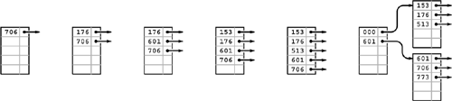
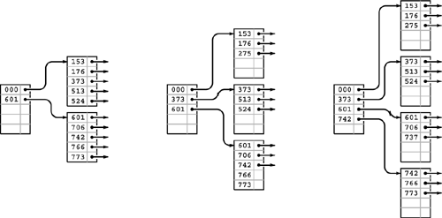
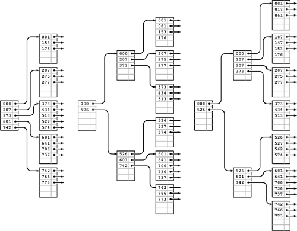
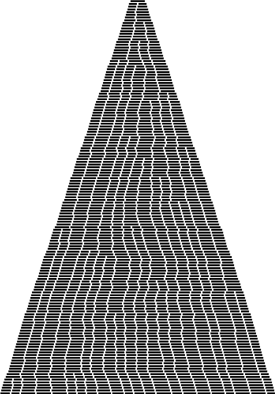
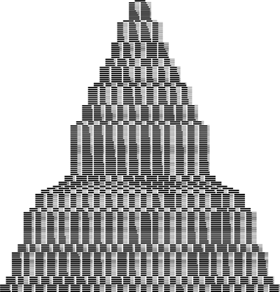

C++ Programming Robert Sedgewick - Princeton University Addison Wesley Professional Algorithms in C++, Parts 1–4: Fundamentals, Data Structure, Sorting, Searching, Third Edition C++ Programming Robert Sedgewick - Princeton University Addison Wesley Professional Algorithms in C++, Parts 1–4: Fundamentals, Data Structure, Sorting, Searching, Third Edition
16.3. B Trees
To build search structures that can be effective in a dynamic situation, we build multiway trees, but we relax the restriction that every node must have exactly M entries. Instead, we insist that every node must have at most M entries, so that they will fit on a page, but we allow nodes to have fewer entries. To be sure that nodes have a sufficient number of entries to provide the branching that we need to keep search paths short, we also insist that all nodes have at least (say) M/2 entries, except possibly the root, which must have a least one entry (two links). The reason for the exception at the root will become clear when we consider the construction algorithm in detail. Such trees were named B trees by Bayer and McCreight, who, in 1970, were the first researchers to consider the use of multiway balanced trees for external searching. Many people reserve the term B tree to describe the exact data structure built by the algorithm suggested by Bayer and McCreight; we use it as a generic term to refer to a family of related algorithms.
We have already seen a B-tree implementation: In Definitions 13.1 and 13.2, we see that B trees of order 4, where each node has at most four links and at least two links, are none other than the balanced 2-3-4 trees of Chapter 13. Indeed, the underlying abstraction generalizes in a straightforward manner, and we can implement B trees by generalizing the top-down 2-3-4 tree implementations in Section 13.4. However, the various differences between external and internal searching that we discussed in Section 16.1 lead us to a number of different implementation decisions. In this section, we consider an implementation that
Generalizes 2-3-4 trees to trees with between M/2 and M nodes Represents multiway nodes with an array of items and links Implements an index instead of a search structure containing the items Splits from the bottom up Separates the index from the items
The final two properties in this list are not essential, but are convenient in many situations and are normally found in B tree implementations.
Figure 16.4 illustrates an abstract 4-5-6-7-8 tree, which generalizes the 2-3-4 tree that we considered in Section 13.3. The generalization is straightforward: 4-nodes have three keys and four links, 5-nodes have four keys and five links, and so forth, with one link for each possible interval between keys. To search, we start at the root and move from one node to the next by finding the proper interval for the search key in the current node and then exiting through the corresponding link to get to the next node. We terminate the search with a search hit if we find the search key in any node that we touch; we terminate with a search miss if we reach the bottom of the tree without a hit. As we can in top-down 2-3-4 trees, we can insert a new key at the bottom of the tree after a search if, on the way down the tree, we split nodes that are full: If the root is an 8-node, we split it into a 2-node connected to two 4-nodes; then, any time we see a k-node attached to an 8-node, we replace it by a (k + 1)-node attached to two 4-nodes. This policy guarantees that we have room to insert the new node when we reach the bottom.
This figure depicts a generalization of 2-3-4 trees built from nodes with 4 through 8 links (and 3 through 7 keys, respectively). As with 2-3-4 trees, we keep the height constant by splitting 8-nodes when encountering them, with either a top-down or a bottom-up insertion algorithm. For example, to insert another J into this tree, we would first split the 8-node into two 4-nodes, then insert the M into the root, converting it into a 6-node. When the root splits, we have no choice but to create a new root that is a 2-node, so the root node is excused from the constraint that nodes must have at least four links.
Alternatively, as discussed for 2-3-4 trees in Section 13.3, we can split from the bottom up: We insert by searching and putting the new key in the bottom node, unless that node is a 8-node, in which case we split it into two 4-nodes and insert the middle key and the links to the two new nodes into its parent, working up the tree until encountering an ancestor that is not a 8-node.
Replacing 4 by M/2 and 8 by M in descriptions in the previous two paragraphs converts them into descriptions of search and insert for M/2-...-M trees, for any positive even integer M, even 2 (see Exercise 16.9).
Definition 16.2. A B tree of order M is a tree that either is empty or comprises k-nodes, with k - 1 keys and k links to trees representing each of the k intervals delimited by the keys, and has the following structural properties: k must be between 2 and M at the root and between M/2 and M at every other node; and all links to empty trees must be at the same distance from the root.|
B tree algorithms are built upon this basic set of abstractions. As in Chapter 13, we have a great deal of freedom in choosing concrete representations for such trees. For example, we can use an extended red-black representation (see Exercise 13.69). For external searching, we use the even more straightforward ordered-array representation, taking M to be sufficiently large that M-nodes fill a page. The branching factor is at least M/2, so the number of probes for any search or insert is effectively constant, as discussed following Property 16.1.
Instead of implementing the method just described, we consider a variant that generalizes the standard index that we considered in Section 16.1. We keep keys with item references in external pagesat the bottom of the tree, and copies of keys with page references in internal pages. We insert new items at the bottom, and then use the basic M/2-. . .-M tree abstraction. When a page has M entries, we split it into two pages with M/2 pages each, and insert a reference to the new page into its parent. When the root splits, we make a new root with two children, thus increasing the height of the tree by 1.
Figures 16.5 through 16.7 show the B tree that we build by inserting the keys in Figure 16.1 (in the order given) into an initially empty tree, with M = 5. Doing insertions involves simply adding an item to a page, but we can look at the final tree structure to determine the significant events that occurred during its construction. It has seven external pages, so there must have been six external node splits, and it is of height 3, so the root of the tree must have split twice. These events are described in the commentary that accompanies the figures.
This example shows six insertions into an initially empty B tree built with pages that can hold five keys and links, using keys that are 3-digit octal numbers (9-bit binary numbers). We keep the keys in order in the pages. The sixth insertion causes a split into two external nodes with three keys each and an internal node that serves as an index: Its first pointer points to the page containing all keys greater than or equal to 000 but less than 601, and its second pointer points to the page containing all keys greater than or equal to 601. 
|
After we insert the four keys 742, 373, 524, and 766 into the rightmost B tree in Figure 16.5, both of the external pages are full (left). Then, when we insert 275, the first page splits, sending a link to the new page (along with its smallest key 373) up to the index (center); when we then insert 737, the page at the bottom splits, again sending a link to the new page up to the index (right). 
Continuing our example, we insert the 13 keys 574, 434, 641, 207, 001, 277, 061, 736, 526, 562, 017, 107, and 147 into the rightmost B tree in Figure 16.6. Node splits occur when we insert 277 (left), 526 (center), and 107 (right). The node split caused by inserting 526 also causes the index page to split, and increases the height of the tree by one. 
Program 16.1 gives the type definitions for nodes for our B-tree implementation. We do not specify the structure of nodes in the detail that would be required in an actual implementation, because that should involve reference to specific disk pages. For clarity, we use one node type, each node consisting of an array of entries that each contain an item, a key, and a link. Each node also contains a count giving the number of active entries. We do not refer to the items in internal nodes; we do not refer to the links in external nodes; and we do not refer to the keys within the items in the tree. The precise data structure that we would choose in an application might save space by using constructs such as union or derived classes. We could also choose to trade space for time by using links to items everywhere in the tree instead of keys. Such design decisions involve straightforward modifications to our code and depend on the precise nature of an application's keys, items, and links.
Program 16.1. B-tree node-type definitions|
Each node in a B tree contains an array and a count of the number of active entries in the array. Each array entry is a key, an item, and a link to a node. In internal nodes, we use only the keys and links; in external nodes, we use only the keys and items. We initialize new nodes to be empty by setting the count field to 0.
template <class Item, class Key>
struct entry
{ Key key; Item item; struct node *next; };
struct node
{ int m; entry<Item, Key> b[M];
node() { m = 0;}
};
typedef node *link;
|
With these definitions and the example trees that we just considered, the code for search that is given in Program 16.2 is straightforward. For external nodes, we scan through the array of nodes to look for a key matching the search key, returning the associated item if we succeed and a null item if we do not. For internal nodes, we scan through the array of nodes to find the link to the unique subtree that could contain the search key.
Program 16.3 is an implementation of insert for B trees; it too uses the recursive approach that we have taken for numerous other search-tree implementations in Chapters 13 and 15. It is a bottom-up implementation because we check for node splitting after the recursive call, so the first node split is an external node. The split requires that we pass up a new link to the parent of the split node, which in turn might need to split and pass up a link to its parent, and so forth, perhaps all the way up to the root of the tree (when the root splits, we create a new root, with two children). By contrast, the 2-3-4–tree implementation of Program 13.6 checks for splits before the recursive call, so we do splitting on the way down the tree. We could also use a top-down approach for B trees (see Exercise 16.10). This distinction between top-down versus bottom-up approaches is unimportant in many B tree applications, because the trees are so flat.
Program 16.2. B-tree search|
This implementation of search for B trees is based on a recursive function, as usual. For internal nodes (positive height), we scan to find the first key larger than the search key, and do a recursive call on the subtree referenced by the previous link. For external nodes (height 0), we scan to see whether or not there is an item with key equal to the search key.
private:
Item searchR(link h, Key v, int ht)
{ int j;
if (ht == 0)
for (j = 0; j < h->m; j++)
{ if (v == h->b[j].key)
return h->b[j].item; }
else
for (j = 0; j < h->m; j++)
if ((j+1 == h->m) || (v < h->b[j+1].key))
return searchR(h->b[j].next, v, ht-1);
return nullItem;
}
public:
Item search(Key v)
{ return searchR(head, v, HT);}
|
The node-splitting code is given in Program 16.4. In the code, we use an even value for the variable M, and we allow only M - 1 items per node in the tree. This policy allows us to insert the Mth item into a node before splitting that node, and simplifies the code considerably without having much effect on the cost (see Exercises 16.20 and 16.21). For simplicity, we use the upper bound of M items per node in the analytic results later in this section; the actual differences are minute. In a top-down implementation, we would not have to resort to this technique, because the convenience of being sure that there is always room to insert a new key in each node comes automatically.
|
Property 16.2. A search or an insertion in a B tree of order M with N items requires between logM N and logM/2 N probes—a constant number, for practical purposes|
This property follows from the observation that all the nodes in the interior of the B tree (nodes that are not the root and are not external) have between M/2 and M links, since they are formed from a split of a full node with M keys, and can only grow in size (when a lower node is split). In the best case, these nodes form a complete tree of degree M, which leads immediately to the stated bound (see Property 16.1). In the worst case, we have a complete tree of degree M/2.
|
Program 16.3. B-tree insertion|
We insert new items by moving larger items to the right by one position, as in insertion sort. If the insertion overfills the node, we call split to divide the node into two halves, and then insert the link to the new node into the parent internal node, which could also split, possibly propagating the insertion all the way up to the root.
private:
link insertR(link h, Item x, int ht)
{ int i, j; Key v = x.key(); entry<Item, Key> t;
t.key = v; t.item = x;
if (ht == 0)
for (j = 0; j < h->m; j++)
{ if (v < h->b[j].key) break; }
else
for (j = 0; j < h->m; j++)
if ((j+1 == h->m) || (v < h->b[j+1].key))
{ link u;
u = insertR(h->b[j++].next, x, ht-1);
if (u == 0) return 0; t.key = u->b[0].key;
t.next = u;
break;
}
for (i = h->m; i > j; i--) h->b[i] = h->b[i-1];
h->b[j] = t;
if (++h->m < M) return 0; else return split(h);
}
public:
ST(int maxN)
{ N = 0; HT = 0; head = new node; }
void insert(Item item)
{ link u = insertR(head, item, HT);
if (u == 0) return;
link t = new node(); t->m = 2;
t->b[0].key = head->b[0].key;
t->b[1].key = u->b[0].key;
t->b[0].next = head; t->b[1].next = u;
head = t; HT++;
}
|
Program 16.4. B-tree node split|
To split a node in a B tree, we create a new node, move the larger half of the keys to the new node, and then adjust counts and set sentinel keys in the middle of both nodes. This code assumes that M is even, and uses an extra position in each node for the item that causes the split. That is, the maximum number of keys in a node is M-1, and when a node gets M keys, we split it into two nodes with M/2 keys each.
link split(link h)
{ link t = new node();
for (int j = 0; j < M/2; j++)
t->b[j] = h->b[M/2+j];
h->m = M/2; t->m = M/2;
return t;
}
|
When M is 1000, the height of the tree is less than three for N less than 125 million. In typical situations, we can reduce the cost to two probes by keeping the root node in internal memory. For a disk-searching implementation, we might take this step explicitly before embarking on any application involving a huge number of searches; in a virtual memory with caching, the root node will be the one most likely to be in fast memory, because it is the most frequently accessed node.
We can hardly expect to have a search implementation that can guarantee a cost of fewer than two probes for search and insert in huge files, and B trees are widely used because they allow us to achieve this ideal. The price of this speed and flexibility is the empty space within the nodes, which could be a liability for huge files.
Property 16.3. A B tree of order M constructed from N random items is expected to have about 1.44N/M pages|
Yao proved this fact in 1979, using mathematical analysis that is beyond the scope of this book (see reference section). It is based on analyzing a simple probabilistic model that describes tree growth. After the first M/2 nodes have been inserted, there are, at any given time, ti external pages with i items, for M/2  i M, with tM/2 + . . . + tM = N. Since each interval between nodes is equally likely to receive a random key, the probability that a node with i items is hit is ti/N. Specifically, for i < M, this quantity is the probability that the number of external pages with i items decreases by 1 and the number of external pages with (i + 1) items increases by 1; and for i = 2M, this quantity is the probability that the number of external pages with 2M items decreases by 1 and the number of external pages with M items increases by 2. Such a probabilistic process is called a Markov chain. Yao's result is based on an analysis of the asymptotic properties of this chain. i M, with tM/2 + . . . + tM = N. Since each interval between nodes is equally likely to receive a random key, the probability that a node with i items is hit is ti/N. Specifically, for i < M, this quantity is the probability that the number of external pages with i items decreases by 1 and the number of external pages with (i + 1) items increases by 1; and for i = 2M, this quantity is the probability that the number of external pages with 2M items decreases by 1 and the number of external pages with M items increases by 2. Such a probabilistic process is called a Markov chain. Yao's result is based on an analysis of the asymptotic properties of this chain.
|
We can also validate Property 16.3 by writing a program to simulate the probabilistic process (see Exercise 16.11 and Figures 16.8 and 16.9). Of course, we also could just build random B trees and measure their structural properties. The probabilistic simulation is simpler to do than either the mathematical analysis or the full implementation, and is an important tool for us to use in studying and comparing variants of the algorithm (see, for example, Exercise 16.16).
In this simulation, we insert items with random keys into an initially empty B tree with pages that can hold nine keys and links. Each line displays the external nodes, with each external node depicted as a line segment of length proportional to the number of items in that node. Most insertions land in an external node that is not full, increasing that node's size by 1. When an insertion lands in a full external node, the node splits into two nodes of half the size.

This version of Figure 16.8 shows how pages fill during the B tree growth process. Again, most insertions land in a page that is not full and just increase its occupancy by 1. When an insertion does land in a full page, the page splits into two half-empty pages.

The implementations of other symbol-table operations are similar to those for several other tree-based representations that we have seen before, and are left as exercises (see Exercises 16.22 through 16.25). In particular, select and sort implementations are straightforward, but as usual, implementing a proper remove can be a challenging task. Like insert, most remove operations are a simple matter of removing an item from an external page and decrementing its counter, but what do we do when we have to remove an item from a node that has only M/2 items? The natural approach is to find items from sibling nodes to fill the space (perhaps reducing the number of nodes by one), but the implementation becomes complicated because we have to track down the keys associated with any items that we move among nodes. In practical situations, we can typically adopt the much simpler approach of letting external nodes become underfull, without suffering much performance degradation (see Exercise 16.25).
Many variations on the basic B-tree abstraction suggest themselves immediately. One class of variations saves time by packing as many page references as possible in internal nodes, thereby increasing the branching factor and flattening the tree. As we have discussed, the benefits of such changes are marginal in modern systems, since standard values of the parameters allow us to implement search and insert with two probes—an efficiency that we could hardly improve. Another class of variations improves storage efficiency by combining nodes with siblings before splitting. Exercises 16.13 through 16.16 are concerned with such a method, which reduces the excess storage used from 44 to 23 percent, for random keys. As usual, the proper choice among different variations depends on properties of applications. Given the broad variety of different situations where B trees are applicable, we will not consider such issues in detail. We also will not be able to consider details of implementations, because there are so many device- and system-dependent matters to take into account. As usual, delving deeply into such implementations is a risky business, and we shy away from such fragile and nonportable code in modern systems, particularly when the basic algorithm performs so well.
Exercises |
 16.5Give the contents of the 3-4-5-6 tree that results when you insert the keys E A S Y Q U E S T I O N W I T H P L E N T Y O F K E Y S in that order into an initially empty tree.
16.5Give the contents of the 3-4-5-6 tree that results when you insert the keys E A S Y Q U E S T I O N W I T H P L E N T Y O F K E Y S in that order into an initially empty tree. | |
 16.6 Draw figures corresponding to Figures 16.5 through 16.7, to illustrate the process of inserting the keys 516, 177, 143, 632, 572, 161, 774, 470, 411, 706, 461, 612, 761, 474, 774, 635, 343, 461, 351, 430, 664, 127, 345, 171, and 357 in that order into an initially empty tree, with M = 5.
16.6 Draw figures corresponding to Figures 16.5 through 16.7, to illustrate the process of inserting the keys 516, 177, 143, 632, 572, 161, 774, 470, 411, 706, 461, 612, 761, 474, 774, 635, 343, 461, 351, 430, 664, 127, 345, 171, and 357 in that order into an initially empty tree, with M = 5. | |
16.7 Give the height of the B trees that result when you insert the keys in Exercise 16.6 in that order into an initially empty tree, for each value of M > 2. | | 16.8 Draw the B tree that results when you insert 16 equal keys into an initially empty tree, with M = 4. | |
 16.9 Draw the 1-2 tree that results when you insert the keys EASYQ UES T I O N into an initially empty tree. Explain why 1-2 trees are not of practical interest as balanced trees.
16.9 Draw the 1-2 tree that results when you insert the keys EASYQ UES T I O N into an initially empty tree. Explain why 1-2 trees are not of practical interest as balanced trees. | |
16.10 Modify the B-tree–insertion implementation in Program 16.3 to do splitting on the way down the tree, in a manner similar to our implementation of 2-3-4–tree insertion (Program 13.6). | | | |
16.11 Write a program to compute the average number of external pages for a B tree of order M built from N random insertions into an initially empty tree, using the probabilistic process described after Property 16.1. Run your program for M = 10, 100, and 1000 and N = 103, 104, 105, and 106. | |
16.12 Suppose that, in a three-level tree, we can afford to keep a links in internal memory, between b and 2b links in pages representing internal nodes, and between c and 2c items in pages representing external nodes. What is the maximum number of items that we can hold in such a tree, as a function of a, b, and c? | |
16.13 Consider the sibling split (or B* tree) heuristic for B trees: When it comes time to split a node because it contains M entries, we combine the node with its sibling. If the sibling has k entries with k < M – 1, we reallocate the items giving the sibling and the full node each about (M + k)/2 entries. Otherwise, we create a new node and give each of the three nodes about 2M/3 entries. Also, we allow the root to grow to hold about 4M=3 items, splitting it and creating a new root node with two entries when it reaches that bound. State bounds on the number of probes used for a search or an insertion in a B* tree of order M with N items. Compare your bounds with the corresponding bounds for B trees (see Property 16.2), for M = 10, 100, and 1000 and N = 103, 104, 105, and 106. | |
 16.14 Develop a B* tree insert implementation (based on the sibling-split heuristic).
16.14 Develop a B* tree insert implementation (based on the sibling-split heuristic). | |
16.15 Create a figure like Figure 16.8 for the sibling-split heuristic. | |
16.16 Run a probabilistic simulation (see Exercise 16.11) to determine the average number of pages used when we use the sibling-split heuristic, building a B* tree of order M by inserting random nodes into an initially empty tree, for M = 10, 100, and 1000 and N = 103, 104, 105, and 106. | |
16.17 Write a program to construct a B tree index from the bottom up, starting with an array of pointers to pages containing between M and 2M items, in sorted order. | |
16.18 Could an index with all pages full, such as Figure 16.2, be constructed by the B-tree–insertion algorithm considered in the text (Program 16.3)? Explain your answer. | | 16.19 Suppose that many different computers have access to the same index, so several programs may be trying to insert a new node in the same B tree at about the same time. Explain why you might prefer to use top-down B trees instead of bottom-up B trees in such a situation. Assume that each program can (and does) delay the others from modifying any given node that it has read and might later modify. | |
16.20 Modify the B-tree implementation in Programs 16.1 through 16.3 to allow M items per node to exist in the tree. | |
16.21 Tabulate the difference between log999 N and log1000 N, for N = 103, 104, 105, and 106. | | | |
16.22 Implement the sort operation for a B-tree–based symbol table. | |
16.23 Implement the select operation for a B-tree–based symbol table. | |
16.24 Implement the remove operation for a B-tree–based symbol table. | |
16.25 Implement the remove operation for a B-tree–based symbol table, using a simple method where you delete the indicated item from its external page (perhaps allowing the number of items in the page to fall below M/2), but do not propagate the change up through the tree, except possibly to adjust the key values if the deleted item was the smallest in its page. | |
16.26 Modify Programs 16.2 and 16.3 to use binary search (see Program 12.6) within nodes. Determine the value of M that minimizes the time that your program takes to build a symbol table by inserting N items with random keys into an initially empty table, for N = 103, 104, 105, and 106, and compare the times that you get with the corresponding times for red–black trees (Program 13.6). |
|